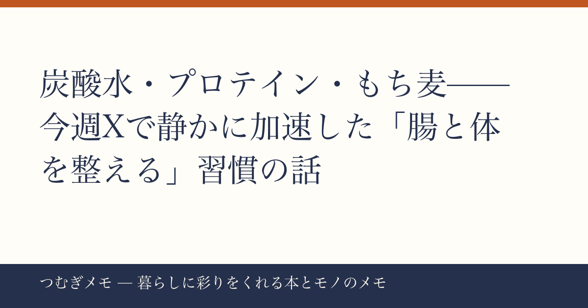

こんにちは、つむぎです。今週の楽天ランキングを眺めていたら、ある"引力"に気がつきました。
この記事でわかること： 今週のバズ材料に複数かつ独立して登場した「体の内側を整えるアイテム」がなぜ今これほど選ばれているのか、その背景と今日から始められる具体的な行動を整理します。
今週の要点
- 炭酸水500ml×48本が楽天ランキング11位に。「毎日飲む」前提の大量買いが主流になっている
- ホエイプロテイン3kgが8位にランクイン。「筋肉づくり」より「タンパク質の底上げ」として選ばれている流れ
- 讃岐もち麦がレビュー★4.87という圧倒的評価で登場。腸活アイテムとして定着しつつある
---
事実： 楽天ランキング11位に入ったのは、炭酸水500ml×48本（24本×2ケース）のまとめ買い商品。レビュー件数1万7032件・★4.68という数字は、一過性のブームではなく長期間にわたって繰り返し購入されてきた積み重ねを示している。
分析： 48本という単位が興味深い。1日2本飲んでも24日分。つまり「1か月の水分補給をまとめて解決する」という発想で買われている。砂糖入りのジュースやカフェイン飲料を炭酸水に置き換えるという行動は以前からあったが、「まとめ買いを前提にした生活設計」まで組み込まれているのは、習慣化が一段階進んだサインだと思う。送料無料で玄関まで届くという利便性が、「スーパーで都度買い」の選択肢を完全に上回り始めている。暮らしを整えるうえで「買い物の手間を減らす」は意外に見落とされがちだけれど、これが継続のカギになる。
実践： まずは「今飲んでいるジュースやカフェイン飲料の1本を、炭酸水に置き換える」ことから始めてみる。最初の1週間は味気なく感じるかもしれないが、レモン風味や強炭酸タイプを試しながら自分に合うものを探すと続きやすい。
---
事実： 楽天8位にランクインしたホエイプロテイン3kg（ミルクチョコレート味）は、レビュー2355件・★4.46。商品説明に「ダイエット」「タンパク質」「運動」と並んで「高たんぱく」が前面に出ており、3kgという大容量が選ばれている。
分析： かつてプロテインは「ジムに通う人が飲むもの」というイメージが強かった。しかし今、検索ワードが変わってきている。「忙しくて食事が偏る」「外食が多くてタンパク質が足りていない気がする」——そういった普通の生活者が、栄養を補う手段として選ぶようになっている。3kgを選ぶということは、「毎朝1杯をルーティンにする」と決めた人の買い方だ。単発で試すなら1kgを選ぶはず。この"大容量シフト"は、プロテインが日用品の棚に移動したことを示している。タンパク質不足は疲れやすさや集中力の低下に関係するという話は、各所の調査結果としても報じられている。
実践： プロテインを毎朝の「朝食の一部」として組み込んでみる。牛乳に溶かして飲むだけなら5分もかからない。「筋トレしてから飲む」ではなく「起きたら飲む」に変えると、習慣のハードルが一気に下がる。コップと計量スプーンをキッチンに出しっぱなしにしておく、それだけで継続率が変わる。
---
事実： 讃岐もち麦（国産・香川県善通寺市産）がレビュー857件・★4.87で楽天ランキングに登場。★4.87という数字は今週の材料の中でも突出して高い評価で、しかも「腸活」「βグルカン」「食物繊維」という複数のキーワードを同時に持っている。
分析： もち麦が注目される背景には、「サプリに頼らず、毎日の食事の中で腸を整えたい」という意識の高まりがある。白米に混ぜて炊くだけ、という手軽さが継続しやすく、外見も食感も「それほど変えなくていい」のが受け入れられている理由だと思う。炭酸水とプロテインと合わせて考えると、今週のランキングには「特別なことをするのではなく、毎日のルーティンの質を少し上げる」という共通のテーマが浮かんでくる。900gというサイズとチャック付きの保存のしやすさも、継続を支える設計として評価されているのだろう。腸内環境と体調・気分の関係については、近年多くの研究機関が注目しているテーマでもある。
実践： 白米2合を炊くとき、もち麦を大さじ2〜3杯混ぜてみる。水は少し多めにして、あとは普通に炊くだけ。最初の1週間はプチプチした食感が新鮮で、むしろ食事が楽しくなることが多い。「炭酸水・プロテイン・もち麦ごはん」の3点セットが揃えば、今日からひとつの「整える習慣」が始まる。
---
Q. 炭酸水は毎日飲んでも問題ない？
無糖の炭酸水であれば、水分補給として日常的に飲んでいる人は多い。ただし、強炭酸を大量に飲み続けると歯のエナメル質への影響を気にする声もある。食事中よりも食間に飲む、という使い方が一般的に取られているようだ。気になる場合は歯科医や医師に相談を。
Q. プロテインはどんな人に向いている？
筋トレをしていない人でも、「食事でタンパク質が十分に取れていないと感じる日がある」なら取り入れやすい選択肢の一つ。忙しい朝に食事を抜きがちな人、外食が多くて栄養バランスが偏りやすい人に特に向いていると言われている。腎臓に疾患がある方は医師への相談が先決。
Q. もち麦と押し麦の違いは？
もち麦はもちもちとした食感があり、水溶性食物繊維（βグルカン）の含有量が押し麦より多いとされている。押し麦はあっさりした食感。どちらも白米に混ぜて炊けるが、食感の好みで選んでよいと思う。
---
今週のランキングを並べて見えてきたのは、「特別なことをしない」という選択だった。炭酸水、プロテイン、もち麦——どれも地味といえば地味だけれど、毎日続けることで体の土台をつくっていく類のものだ。派手なダイエット法や高額なサプリに飛びつくより、こういう地道な選択の積み重ねが暮らしを整えていく、と僕は思っている。
来週も暮らしのヒントになるものを探してお届けします。気に入ったらブックマークしておいてもらえると嬉しいです。
X（@tsumugi_memo15）でも随時つぶやいているので、気軽にのぞいてみてください。
*このブログ「つむぎメモ」は、AIと一緒に運用している実験的なメディアです。キュレーションの判断や文章の構成にAIを活用しながら、僕・つむぎが編集・確認して公開しています。新しいメディアの形を試している最中なので、感想があればXで教えてもらえると励みになります。*
📚 目次へ